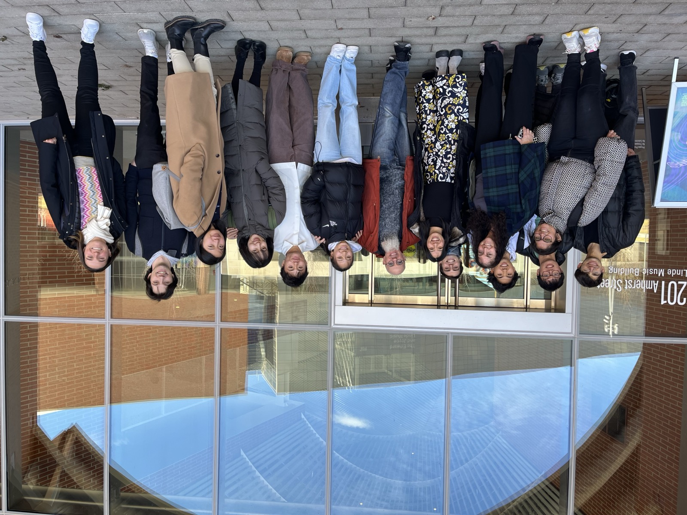

Human-AI Resonance Lab
We are a research lab at MIT exploring generative AI for live musical interaction—building systems that musicians can jam with, steer, and understand in real time.

Explore
Meet our people, read the blog, browse publications and music, or learn how to join.